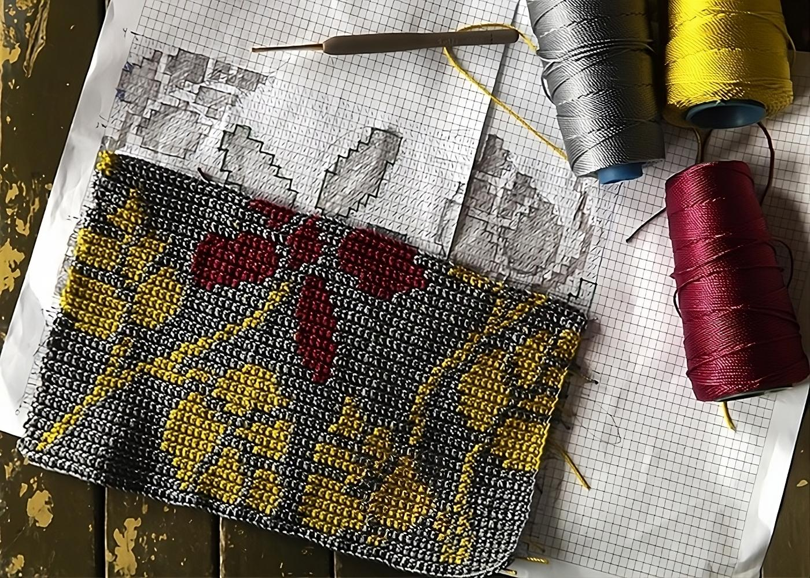
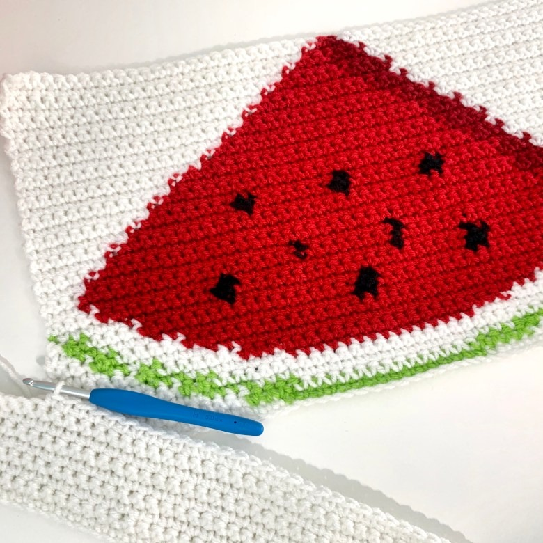
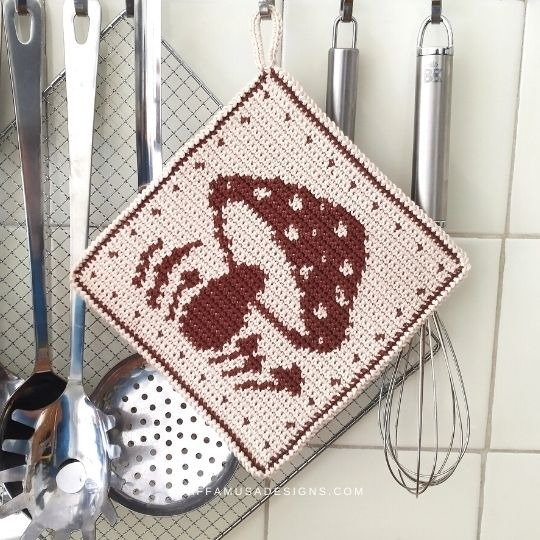
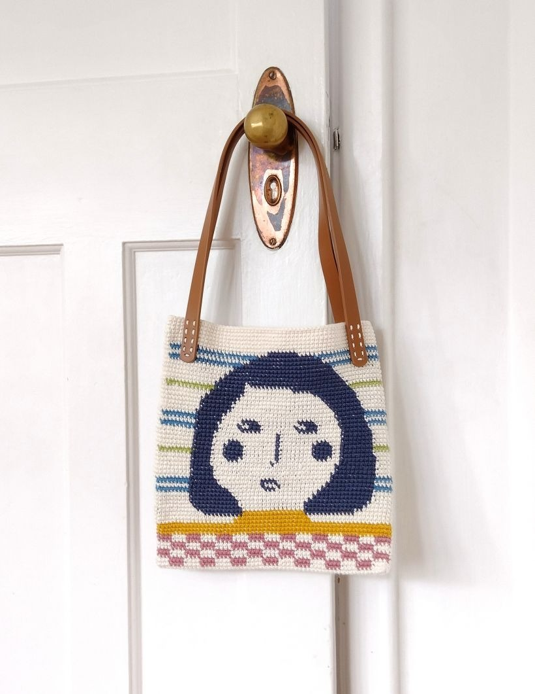
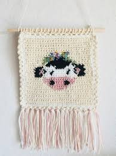
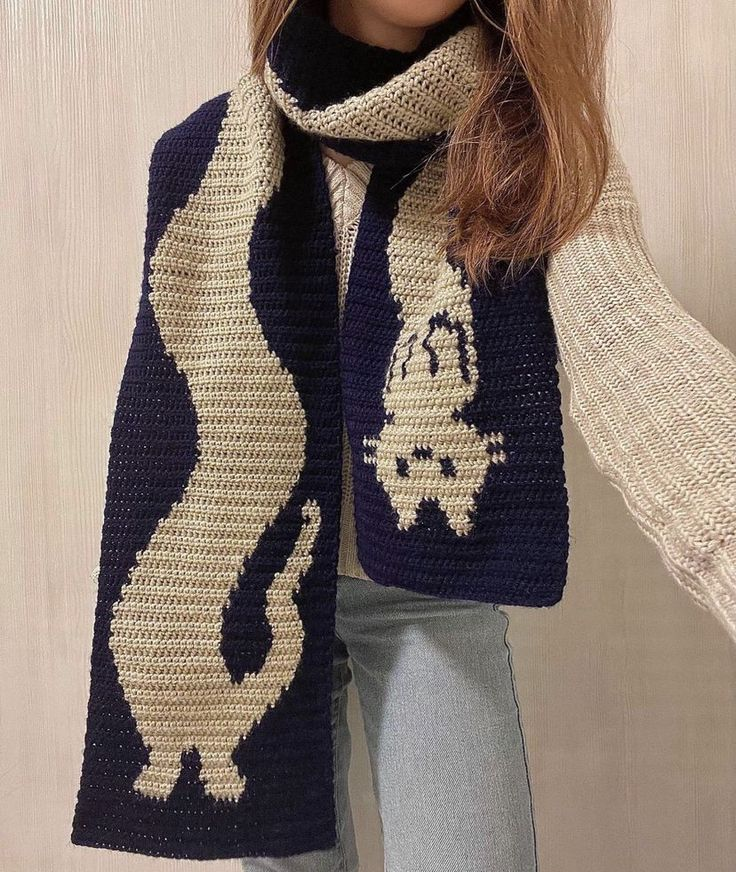
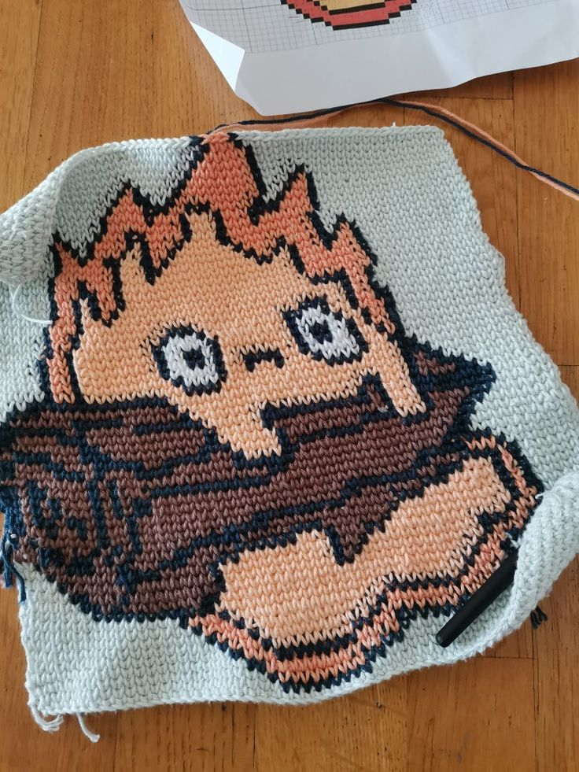
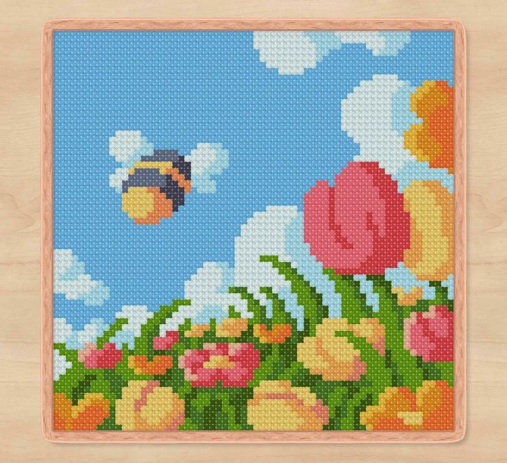

Sin Rostro (El Viaje de Chihiro) Tapestry - "Misterio Tejido" • Dificultad: Avanzado • Materiales: Hilos de colores variados, aguja de tapestry • Tamaño del Proyecto: Variable (ideal para colgar)  Flores Tapestry - "Jardín Tejido" • Dificultad: Intermedio • Materiales: Hilos de colores variados, aguja de tapestry • Tamaño del Proyecto: Variable (ideal para colgar)  Sandía Tapestry - "Dulce Frescura" • Dificultad: Intermedio • Materiales: Hilos de colores variados, aguja de tapestry • Tamaño del Proyecto: Variable (ideal para colgar o decoración)  Hongo Tapestry - "Aventuras en el Bosque" • Dificultad: Intermedio • Materiales: Hilos de colores variados y aguja • Tamaño del Proyecto: Variable (ideal para colgar)  Bolso de Rostro Coqueto en Tapestry - "Estilo Divertido" • Dificultad: Avanzado • Materiales: Hilos de colores variados, aguja de tapestry • Tamaño del Proyecto: Variable (ideal como accesorio de moda)  Vaquita Tierna Tapestry - "Encanto Bovino" • Dificultad: Intermedio • Materiales: Hilos de colores variados, aguja de tapestry • Tamaño del Proyecto: Variable (ideal para colgar o decoración)  Bufanda de Gato - "Elegancia Felina" • Dificultad: Intermedio • Materiales: Hilo suave, aguja de crochet • Tamaño del Proyecto: Ajustable (ideal para adultos)  Tapestry de Calcifer - (Howl's Moving Castle) • Dificultad: Avanzado • Materiales: Hilos de colores variados y aguja • Tamaño del Proyecto: Variable (ideal para colgar)  Cuadro de Abeja y Tulipanes Tapestry: "Jardín de Puntadas" • Dificultad: Avanzado • Materiales: Hilos de colores variados, aguja de tapestry • Tamaño del Proyecto: Variable (ideal para colgar) Howl's Castle Tapestry - "Viaje Tejido" • Dificultad: Avanzado • Materiales: Hilos de colores variados y aguja • Tamaño del Proyecto: Variable (ideal para colgar) Bolso de Gato Durmiendo Tapestry: "Compañero Relajado" • Dificultad: Intermedio • Materiales: Hilos de colores variados, aguja de tapestry • Tamaño del Proyecto: Variable (ideal como bolso de mano) Tapestry de Snoopy - "Diversión Animada" • Dificultad: Intermedio • Materiales: Hilos de colores y aguja • Tamaño del Proyecto: Variable (ideal para decoración)